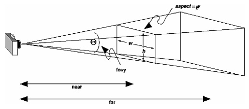

視点（eyePoint）・注視点（sightPoint）・上方向ベクトル（upVector）・視界角（fovy）・近（near）・遠（far）の視界情報を専門に保持するプロジェクション（投影のための）オブジェクトを導入しましょう。縦横比であるアスペクト（aspect）は、ウィンドウの大きさに関係しますので、後述するMVC（モデル・ビュー・コントローラ）のビューで扱います。

XYZ軸の大きさやウィンドウのタイトルも扱いやすいように調整します。以下の差分（変更箇所：編集部分）やクラス階層（インヘリタンス）を参考にしながら、その後に示すソースコード（Version 4）と同じになるように、プログラムを編集・加筆してください。
【前バージョンからの差分＝変更箇所】【ファイルやディレクトリの増減】 ======================================== Compare: ./Version3 1: dragon/Dragon.java 2: dragon/Example.java 3: mvc4jogl/OpenGLCompound.java 4: mvc4jogl/OpenGLObject.java 5: mvc4jogl/OpenGLPolygon.java 6: mvc4jogl/OpenGLTriangle.java 7: mvc4jogl/Teapot.java with: ./Version4 1: dragon/Dragon.java 2: dragon/Example.java 3: mvc4jogl/OpenGLCompound.java 4: mvc4jogl/OpenGLObject.java 5: mvc4jogl/OpenGLPolygon.java 6: mvc4jogl/OpenGLProjection.java 7: mvc4jogl/OpenGLTriangle.java 8: mvc4jogl/Teapot.java ======================================== Added (or Removed) files: 5a6 > mvc4jogl/OpenGLProjection.java ======================================== 【それぞれのファイルの変更】 ---------------------------------------- Compare: ./Version3/dragon/Dragon.java with: ./Version4/dragon/Dragon.java ---------------------------------------- Result: 3,7d2 < import com.jogamp.opengl.GL; < import com.jogamp.opengl.GL2; < import com.jogamp.opengl.glu.GLU; < import com.jogamp.opengl.util.gl2.GLUT; < 12a8 > import mvc4jogl.OpenGLProjection; 91,176c87,105 < * 視点を応答する。 < * @return 視点座標（x,y,zの配列） < */ < public double[] eyePoint() < { < return new double[] { -5.5852450791872d, 3.07847342734d, 15.794105252496d }; < } < < /** < * 注視点を応答する。 < * @return 注視点座標（x,y,zの配列） < */ < public double[] sightPoint() < { < return new double[] { 0.27455347776413d, 0.20096999406815d, -0.11261999607086d }; < } < < /** < * 上方向ベクトルを応答する。 < * @return 上方向ベクトル（x,y,zの配列） < */ < public double[] upVector() < { < return new double[] { 0.1018574904194d, 0.98480906061847d, -0.14062775604137d }; < } < < /** < * 視野角を応答する。 < * @return 視野角 < */ < public double fovy() < { < return 12.642721790235d; < } < < /** < * 近を応答する。 < * @return 近 < */ < public double near() < { < return 0.01d; < } < < /** < * 遠を応答する。 < * @return 遠 < */ < public double far() < { < return 100.0d; < } < < /** < * レンダリング（描画）する。 < * @param gl グラフィックライブラリ < * @param glu グラフィックライブラリユーテリティ < * @param glut グラフィックライブラリユーテリティツールキット < */ < public void rendering(GL2 gl, GLU glu, GLUT glut) < { < double scale = 1.0d; < < gl.glBegin(GL2.GL_LINES); < < // X軸（赤）を描画する。 < gl.glColor4d(1.0d, 0.0d, 0.0d, 1.0d); < gl.glVertex3d(-1.000d * scale, 0.0d, 0.0d); < gl.glVertex3d( 1.618d * scale, 0.0d, 0.0d); < < // Y軸（緑）を描画する。 < gl.glColor4d(0.0d, 1.0d, 0.0d, 1.0d); < gl.glVertex3d(0.0d, -1.000d * scale, 0.0d); < gl.glVertex3d(0.0d, 1.618d * scale, 0.0d); < < // Z軸（青）を描画する。 < gl.glColor4d(0.0d, 0.0d, 1.0d, 1.0d); < gl.glVertex3d(0.0d, 0.0d, -1.000d * scale); < gl.glVertex3d(0.0d, 0.0d, 1.618d * scale); < < gl.glEnd(); < < // ドラゴンを描画する。 < super.rendering(gl, glu, glut); < < gl.glFlush(); --- > * ドラゴンを生成してウィンドウを開く。 > * @param x ウィンドウを開く場所のx座標 > * @param y ウィンドウを開く場所のy座標 > */ > public static void open(int x, int y) > { > // 描画オブジェクトを生成する。 > OpenGLObject aDragon = new Dragon(); > > // モデルに描画オブジェクトを指定してウィンドウを開く。 > Example anExample = new Example(aDragon); > anExample.axesScale(1.0d); > anExample.windowTitle("Dragon"); > OpenGLProjection aProjection = anExample.projection(); > aProjection.eyePoint(-5.5852450791872d, 3.07847342734d, 15.794105252496d); > aProjection.sightPoint(0.27455347776413d, 0.20096999406815d, -0.11261999607086d); > aProjection.upVector(0.1018574904194d, 0.98480906061847d, -0.14062775604137d); > aProjection.fovy(12.642721790235d); > anExample.open(x, y); 180,188d108 < < /** < * ウィンドウのタイトル（ラベル）を応答する。 < * @return タイトル文字列 < */ < public String windowTitle() < { < return "Dragon"; < } ---------------------------------------- Compare: ./Version3/dragon/Example.java with: ./Version4/dragon/Example.java ---------------------------------------- Result: 20a21 > import mvc4jogl.OpenGLProjection; 56c57,72 < protected Dragon displayObject; --- > protected OpenGLObject displayObject; > > /** > * プロジェクションを記憶するフィールドである。 > */ > protected OpenGLProjection projection; > > /** > * XYZ軸のスケール（大きさ）を記憶するフィールドである。 > */ > protected double axesScale; > > /** > * ウィンドウタイトルを記憶するフィールドである。 > */ > protected String windowTitle; 61c77 < public Example() --- > public Example(OpenGLObject aBody) 65,66c81,84 < // ドラゴンのインスタンスを生成する。 < this.displayObject = new Dragon(); --- > this.displayObject = aBody; > this.projection = new OpenGLProjection(); > this.axesScale = 1.0; > this.windowTitle = "Untitled"; 68,73c86,87 < // OpenGL描画のためのキャンバスを生成する。 < GLProfile profile = GLProfile.get(GLProfile.GL2); < GLCapabilities capabilities = new GLCapabilities(profile); < capabilities.setDoubleBuffered(true); < GLCanvas aCanvas = new GLCanvas(capabilities); < aCanvas.addGLEventListener(this); --- > return; > } 75,85c89,133 < // フレームを生成し、上記のキャンバスを乗せて、ウィンドウとして開く。 < JFrame aFrame = new JFrame(this.displayObject.windowTitle()); < aFrame.add(aCanvas); < aFrame.addNotify(); < int titleBarHeight = aFrame.getInsets().top; < aFrame.setSize(400, 400 + titleBarHeight); < aFrame.setLocationRelativeTo(null); < // aFrame.setDefaultCloseOperation(JFrame.DO_NOTHING_ON_CLOSE); < aFrame.addWindowListener(this); < aFrame.setFocusable(false); < aFrame.setVisible(true); --- > /** > * プロジェクションを応答する。 > * @return プロジェクション > */ > public OpenGLProjection projection() > { > return this.projection; > } > > /** > * XYZ軸の大きさを応答する。 > * @return XYZ軸の大きさ > */ > public double axesScale() > { > return this.axesScale; > } > > /** > * XYZ軸の大きさを設定する。 > * @param scale XYZ軸の大きさ > */ > public void axesScale(double scale) > { > this.axesScale = scale; > > return; > } > > /** > * ウィンドウタイトルを応答する。 > * @return ウィンドウタイトル > */ > public String windowTitle() > { > return this.windowTitle; > } > > /** > * ウィンドウタイトルを設定する。 > * @param title ウィンドウタイトル > */ > public void windowTitle(String title) > { > this.windowTitle = title; 125,131c173,179 < // 視界（視点・注視点・上方向ベクトル・視界角・近・遠）をドラゴンから取得して整（設）える。 < double[] eyePoint = this.displayObject.eyePoint(); < double[] sightPoint = this.displayObject.sightPoint(); < double[] upVector = this.displayObject.upVector(); < double fovy = this.displayObject.fovy(); < double near = this.displayObject.near(); < double far = this.displayObject.far(); --- > // 視界（視点・注視点・上方向ベクトル・視界角・近・遠）を整（設）える。 > double[] eyePoint = this.projection.eyePoint(); > double[] sightPoint = this.projection.sightPoint(); > double[] upVector = this.projection.upVector(); > double fovy = this.projection.fovy(); > double near = this.projection.near(); > double far = this.projection.far(); 168c216,219 < // ドラゴンをレンダリング（描画）する。 --- > // 世界座標系（XYZ軸）を描画する。 > this.displayAxes(); > > // 描画オブジェクトをレンダリング（描画）する。 174a226,254 > * XYZ軸（世界座標系）を描画する。 > */ > public void displayAxes() > { > double scale = this.axesScale(); > > this.gl.glBegin(GL2.GL_LINES); > > // X軸（赤） > this.gl.glColor4d(1.0d, 0.0d, 0.0d, 1.0d); > this.gl.glVertex3d(-1.000d * scale, 0.0d, 0.0d); > this.gl.glVertex3d( 1.618d * scale, 0.0d, 0.0d); > > // Y軸（緑） > this.gl.glColor4d(0.0d, 1.0d, 0.0d, 1.0d); > this.gl.glVertex3d(0.0d, -1.000d * scale, 0.0d); > this.gl.glVertex3d(0.0d, 1.618d * scale, 0.0d); > > // Z軸（青） > this.gl.glColor4d(0.0d, 0.0d, 1.0d, 1.0d); > this.gl.glVertex3d(0.0d, 0.0d, -1.000d * scale); > this.gl.glVertex3d(0.0d, 0.0d, 1.618d * scale); > > this.gl.glEnd(); > > return; > } > > /** 217a298,308 > > /** > * OpenGLのウィンドウを開く。 > */ > public void open() > { > this.open(-1, -1); > > return; > } > 219,221c310,312 < * float配列をfloatバッファに変換する。 < * @param array float配列 < * @return floatバッファ --- > * OpenGLのウィンドウを指定された場所(x, y)に開く。 > * @param x ウィンドウを開く場所のx座標 > * @param y ウィンドウを開く場所のy座標 223c314 < private FloatBuffer asFloatBuffer(float[] array) --- > public void open(int x, int y) 225,226c316,334 < FloatBuffer buffer = FloatBuffer.allocate(array.length); < for (int i = 0; i < array.length; i++) --- > // OpenGL描画のためのキャンバスを生成する。 > GLProfile profile = GLProfile.get(GLProfile.GL2); > GLCapabilities capabilities = new GLCapabilities(profile); > capabilities.setDoubleBuffered(true); > GLCanvas aCanvas = new GLCanvas(capabilities); > aCanvas.addGLEventListener(this); > aCanvas.setFocusable(true); > > // フレームを生成し、上記のキャンバスを乗せて、ウィンドウとして開く。 > JFrame aFrame = new JFrame(this.windowTitle()); > aFrame.add(aCanvas); > aFrame.addNotify(); > int titleBarHeight = aFrame.getInsets().top; > aFrame.setSize(400, 400 + titleBarHeight); > if (x < 0 && y < 0) > { > aFrame.setLocationRelativeTo(null); > } > else 228c336 < buffer.put(array[i]); --- > aFrame.setLocation(x, y); 230c338,341 < buffer.rewind(); --- > // aFrame.setDefaultCloseOperation(JFrame.DO_NOTHING_ON_CLOSE); > aFrame.addWindowListener(this); > aFrame.setFocusable(false); > aFrame.setVisible(true); 232c343 < return buffer; --- > return; 257c368 < new Example(); --- > Dragon.open(100, 100); ---------------------------------------- Compare: ./Version3/mvc4jogl/OpenGLCompound.java with: ./Version4/mvc4jogl/OpenGLCompound.java ---------------------------------------- Result: ---------------------------------------- Compare: ./Version3/mvc4jogl/OpenGLObject.java with: ./Version4/mvc4jogl/OpenGLObject.java ---------------------------------------- Result: ---------------------------------------- Compare: ./Version3/mvc4jogl/OpenGLPolygon.java with: ./Version4/mvc4jogl/OpenGLPolygon.java ---------------------------------------- Result: ---------------------------------------- Compare: ./Version3/mvc4jogl/OpenGLTriangle.java with: ./Version4/mvc4jogl/OpenGLTriangle.java ---------------------------------------- Result: ---------------------------------------- Compare: ./Version3/mvc4jogl/Teapot.java with: ./Version4/mvc4jogl/Teapot.java ---------------------------------------- Result: ----------------------------------------
package dragon;
import java.util.Iterator;
import java.util.List;
import mvc4jogl.OpenGLCompound;
import mvc4jogl.OpenGLObject;
import mvc4jogl.OpenGLProjection;
import mvc4jogl.OpenGLTriangle;
import utility.StringUtility;
/**
* ドラゴンをレンダリング（描画）する。
* XYZ軸に加えてドラゴンを描画する。
* 視界（視点・注視点・上方向ベクトル・視界角・近・遠）もドラゴンが応答する。
*/
public class Dragon extends OpenGLCompound
{
/**
* ドラゴンのコンストラクタである。
* <a href="http://www.cc.kyoto-su.ac.jp/~atsushi/Programs/VisualWorks/Dragon/dragon.txt">dragon.txt</a>からデータを読み取って三角形群を生成する。
*/
public Dragon()
{
// System.out.println("Dragon");
String urlString = "http://www.cc.kyoto-su.ac.jp/~atsushi/Programs/VisualWorks/Dragon/dragon.txt";
List<String> aCollection = StringUtility.readTextFromURL(urlString);
int numberOfVertexes = 0;
int numberOfTriangles = 0;
Iterator<String> anIterator = aCollection.iterator();
while (anIterator.hasNext())
{
String aString = anIterator.next();
List<String> aList = StringUtility.splitString(aString, " \t\n\r");
if (aList.size() == 0) { continue; }
// System.out.println(aList);
String firstString = aList.get(0);
if (firstString.compareTo("number_of_vertexes") == 0)
{
numberOfVertexes = Integer.valueOf(aList.get(1));
// System.out.println(numberOfVertexes);
}
if (firstString.compareTo("number_of_triangles") == 0)
{
numberOfTriangles = Integer.valueOf(aList.get(1));
// System.out.println(numberOfTriangles);
}
if (firstString.compareTo("end_header") == 0)
{
double[][] vertexArray = new double[numberOfVertexes][3];
for (int n = 0; n < numberOfVertexes; n++)
{
aString = anIterator.next();
aList = StringUtility.splitString(aString, " \t\n\r");
double x = Double.valueOf(aList.get(0));
double y = Double.valueOf(aList.get(1));
double z = Double.valueOf(aList.get(2));
vertexArray[n][0] = x;
vertexArray[n][1] = y;
vertexArray[n][2] = z;
// System.out.printf("%d: %g, %g, %g\n", n, vertexArray[n][0], vertexArray[n][1], vertexArray[n][2]);
}
for (int n = 0; n < numberOfTriangles; n++)
{
aString = anIterator.next();
aList = StringUtility.splitString(aString, " \t\n\r");
int i = Integer.valueOf(aList.get(0)) - 1;
int j = Integer.valueOf(aList.get(1)) - 1;
int k = Integer.valueOf(aList.get(2)) - 1;
double[] vertex1 = vertexArray[i];
double[] vertex2 = vertexArray[j];
double[] vertex3 = vertexArray[k];
OpenGLTriangle aTriangle = new OpenGLTriangle(vertex1, vertex2, vertex3);
aTriangle.rgb(0.5d, 0.5d, 1.0d);
this.add(aTriangle);
// System.out.printf("%d: %s\n", n, aTriangle);
}
}
}
return;
}
/**
* ドラゴンを生成してウィンドウを開く。
* @param x ウィンドウを開く場所のx座標
* @param y ウィンドウを開く場所のy座標
*/
public static void open(int x, int y)
{
// 描画オブジェクトを生成する。
OpenGLObject aDragon = new Dragon();
// モデルに描画オブジェクトを指定してウィンドウを開く。
Example anExample = new Example(aDragon);
anExample.axesScale(1.0d);
anExample.windowTitle("Dragon");
OpenGLProjection aProjection = anExample.projection();
aProjection.eyePoint(-5.5852450791872d, 3.07847342734d, 15.794105252496d);
aProjection.sightPoint(0.27455347776413d, 0.20096999406815d, -0.11261999607086d);
aProjection.upVector(0.1018574904194d, 0.98480906061847d, -0.14062775604137d);
aProjection.fovy(12.642721790235d);
anExample.open(x, y);
return;
}
}
package dragon;
import com.jogamp.opengl.GL;
import com.jogamp.opengl.GL2;
import com.jogamp.opengl.glu.GLU;
import com.jogamp.opengl.util.gl2.GLUT;
import com.jogamp.opengl.awt.GLCanvas;
import com.jogamp.opengl.GLAutoDrawable;
import com.jogamp.opengl.GLCapabilities;
import com.jogamp.opengl.GLEventListener;
import com.jogamp.opengl.GLProfile;
import javax.swing.JFrame;
import java.nio.FloatBuffer;
import java.awt.event.WindowAdapter;
import java.awt.event.WindowEvent;
import mvc4jogl.OpenGLObject;
import mvc4jogl.OpenGLProjection;
/**
* JOGL（Java bindings for OpenGL）の例題プログラムである。
* OpenGLを使ったJavaによる三次元グラフィックスの初歩的な練習になる。
*/
public class Example extends WindowAdapter implements GLEventListener
{
/**
* GLオブジェクトを記憶するフィールドである。
*/
protected GL2 gl;
/**
* GLユーティリティを記憶するフィールドである。
*/
protected GLU glu;
/**
* GLユーティリティツールキットを記憶するフィールドである。
*/
protected GLUT glut;
/**
* ビューの幅を記憶するフィールドである。
*/
protected int width;
/**
* ビューの高さを記憶するフィールドである。
*/
protected int height;
/**
* 描画オブジェクトを記憶するフィールドである。
*/
protected OpenGLObject displayObject;
/**
* プロジェクションを記憶するフィールドである。
*/
protected OpenGLProjection projection;
/**
* XYZ軸のスケール（大きさ）を記憶するフィールドである。
*/
protected double axesScale;
/**
* ウィンドウタイトルを記憶するフィールドである。
*/
protected String windowTitle;
/**
* Exampleのコンストラクタである。
*/
public Example(OpenGLObject aBody)
{
// System.out.println("Example");
this.displayObject = aBody;
this.projection = new OpenGLProjection();
this.axesScale = 1.0;
this.windowTitle = "Untitled";
return;
}
/**
* プロジェクションを応答する。
* @return プロジェクション
*/
public OpenGLProjection projection()
{
return this.projection;
}
/**
* XYZ軸の大きさを応答する。
* @return XYZ軸の大きさ
*/
public double axesScale()
{
return this.axesScale;
}
/**
* XYZ軸の大きさを設定する。
* @param scale XYZ軸の大きさ
*/
public void axesScale(double scale)
{
this.axesScale = scale;
return;
}
/**
* ウィンドウタイトルを応答する。
* @return ウィンドウタイトル
*/
public String windowTitle()
{
return this.windowTitle;
}
/**
* ウィンドウタイトルを設定する。
* @param title ウィンドウタイトル
*/
public void windowTitle(String title)
{
this.windowTitle = title;
return;
}
/**
* OpenGL起動時に初期化のために呼び出される。
* @param aDrawable OpenGLの描画ダーゲット
*/
public void init(GLAutoDrawable aDrawable)
{
// System.out.println("init");
// グラフィックライブラリ（gl）を獲得し、
// グラフィックライブラリユーティリティ（glu）と
// グラフィックライブラリユーティリティツールキット（glut）を生成する。
this.gl = aDrawable.getGL().getGL2();
this.glu = new GLU();
this.glut = new GLUT();
// 材質の有効化
// 陰線隠面処理の有効化
// 片面表示機能の無効化
// 法線ベクトルの有効化
this.gl.glEnable(GL2.GL_COLOR_MATERIAL);
this.gl.glEnable(GL2.GL_DEPTH_TEST);
this.gl.glDisable(GL2.GL_CULL_FACE);
this.gl.glEnable(GL2.GL_NORMALIZE);
return;
}
/**
* OpenGL描画を行う際に呼び出される。
* @param aDrawable OpenGLの描画ダーゲット
*/
public void display(GLAutoDrawable aDrawable)
{
// System.out.println("display");
// 視界（視点・注視点・上方向ベクトル・視界角・近・遠）を整（設）える。
double[] eyePoint = this.projection.eyePoint();
double[] sightPoint = this.projection.sightPoint();
double[] upVector = this.projection.upVector();
double fovy = this.projection.fovy();
double near = this.projection.near();
double far = this.projection.far();
// キャンバス（ウィンドウ）の大きさからアスペクト比を求める。
double aspect = (double)width / (double)height;
// プロジェクション（遠近法）を設定する。
this.gl.glMatrixMode(GL2.GL_PROJECTION);
this.gl.glLoadIdentity();
this.glu.gluPerspective(fovy, aspect, near, far);
// 視界を設定する。
this.gl.glMatrixMode(GL2.GL_MODELVIEW);
this.gl.glLoadIdentity();
this.glu.gluLookAt(
eyePoint[0], eyePoint[1], eyePoint[2],
sightPoint[0], sightPoint[1], sightPoint[2],
upVector[0], upVector[1], upVector[2]);
// キャンバスをクリアする。
this.gl.glClearColor(1.0f, 1.0f, 1.0f, 1.0f);
this.gl.glClear(GL2.GL_COLOR_BUFFER_BIT | GL2.GL_DEPTH_BUFFER_BIT);
// 照明を設定する。
this.gl.glEnable(GL2.GL_LIGHTING);
this.gl.glLightModelfv(GL2.GL_LIGHT_MODEL_AMBIENT, OpenGLObject.asFloatBuffer(new float[] { 0.5f, 0.5f, 0.5f, 1.0f }));
this.gl.glLightModelf(GL2.GL_LIGHT_MODEL_LOCAL_VIEWER, 0.0f);
this.gl.glLightModelf(GL2.GL_LIGHT_MODEL_TWO_SIDE, 1.0f);
this.gl.glEnable(GL2.GL_LIGHT0);
this.gl.glLightfv(GL2.GL_LIGHT0, GL2.GL_POSITION, OpenGLObject.asFloatBuffer(new float[] { 0.0f, 0.0f, 1.0f, 0.0f }));
this.gl.glLightfv(GL2.GL_LIGHT0, GL2.GL_SPOT_DIRECTION, OpenGLObject.asFloatBuffer(new float[] { 0.0f, 0.0f, -1.0f }));
this.gl.glLightfv(GL2.GL_LIGHT0, GL2.GL_SPOT_CUTOFF, OpenGLObject.asFloatBuffer(new float[] { 90.0f }));
this.gl.glLightfv(GL2.GL_LIGHT0, GL2.GL_DIFFUSE, OpenGLObject.asFloatBuffer(new float[] { 0.5f, 0.5f, 0.5f, 1.0f }));
this.gl.glLightfv(GL2.GL_LIGHT0, GL2.GL_SPECULAR, OpenGLObject.asFloatBuffer(new float[] { 0.5f, 0.5f, 0.5f, 1.0f }));
this.gl.glLightfv(GL2.GL_LIGHT0, GL2.GL_LINEAR_ATTENUATION, OpenGLObject.asFloatBuffer(new float[] { 0.0f }));
this.gl.glLightfv(GL2.GL_LIGHT0, GL2.GL_QUADRATIC_ATTENUATION, OpenGLObject.asFloatBuffer(new float[] { 0.0f }));
this.gl.glLightfv(GL2.GL_LIGHT0, GL2.GL_CONSTANT_ATTENUATION, OpenGLObject.asFloatBuffer(new float[] { 1.0f }));
// 世界座標系（XYZ軸）を描画する。
this.displayAxes();
// 描画オブジェクトをレンダリング（描画）する。
this.displayObject.rendering(this.gl, this.glu, this.glut);
return;
}
/**
* XYZ軸（世界座標系）を描画する。
*/
public void displayAxes()
{
double scale = this.axesScale();
this.gl.glBegin(GL2.GL_LINES);
// X軸（赤）
this.gl.glColor4d(1.0d, 0.0d, 0.0d, 1.0d);
this.gl.glVertex3d(-1.000d * scale, 0.0d, 0.0d);
this.gl.glVertex3d( 1.618d * scale, 0.0d, 0.0d);
// Y軸（緑）
this.gl.glColor4d(0.0d, 1.0d, 0.0d, 1.0d);
this.gl.glVertex3d(0.0d, -1.000d * scale, 0.0d);
this.gl.glVertex3d(0.0d, 1.618d * scale, 0.0d);
// Z軸（青）
this.gl.glColor4d(0.0d, 0.0d, 1.0d, 1.0d);
this.gl.glVertex3d(0.0d, 0.0d, -1.000d * scale);
this.gl.glVertex3d(0.0d, 0.0d, 1.618d * scale);
this.gl.glEnd();
return;
}
/**
* OpenGL表示モードや表示デバイスが変更された際に呼び出される。
* @param aDrawable OpenGLの描画ダーゲット
* @param modeChanged 表示モードが変更されたか否か
* @param deviceChanged 表示デバイスが変更されたか否か
*/
public void displayChanged(GLAutoDrawable aDrawable, boolean modeChanged, boolean deviceChanged)
{
// System.out.println("displayChanged");
return;
}
/**
* OpenGLの資源が破棄された際に呼び出される。
* @param aDrawable OpenGLの描画ダーゲット
*/
public void dispose(GLAutoDrawable aDrawable)
{
// System.out.println("dispose");
return;
}
/**
* OpenGL表示領域が変更された際に呼び出される。
* @param aDrawable OpenGLの描画ダーゲット
* @param x 表示領域のX座標
* @param y 表示領域のY座標
* @param w 表示領域の幅
* @param h 表示領域の高さ
*/
public void reshape(GLAutoDrawable aDrawable, int x, int y, int w, int h)
{
// System.out.println("reshape");
this.width = w;
this.height = h;
this.gl.glViewport(0, 0, width, height);
return;
}
/**
* OpenGLのウィンドウを開く。
*/
public void open()
{
this.open(-1, -1);
return;
}
/**
* OpenGLのウィンドウを指定された場所(x, y)に開く。
* @param x ウィンドウを開く場所のx座標
* @param y ウィンドウを開く場所のy座標
*/
public void open(int x, int y)
{
// OpenGL描画のためのキャンバスを生成する。
GLProfile profile = GLProfile.get(GLProfile.GL2);
GLCapabilities capabilities = new GLCapabilities(profile);
capabilities.setDoubleBuffered(true);
GLCanvas aCanvas = new GLCanvas(capabilities);
aCanvas.addGLEventListener(this);
aCanvas.setFocusable(true);
// フレームを生成し、上記のキャンバスを乗せて、ウィンドウとして開く。
JFrame aFrame = new JFrame(this.windowTitle());
aFrame.add(aCanvas);
aFrame.addNotify();
int titleBarHeight = aFrame.getInsets().top;
aFrame.setSize(400, 400 + titleBarHeight);
if (x < 0 && y < 0)
{
aFrame.setLocationRelativeTo(null);
}
else
{
aFrame.setLocation(x, y);
}
// aFrame.setDefaultCloseOperation(JFrame.DO_NOTHING_ON_CLOSE);
aFrame.addWindowListener(this);
aFrame.setFocusable(false);
aFrame.setVisible(true);
return;
}
/**
* ウィンドウを閉じようとした時に呼び出される。
* @param aWindowEvent ウィンドウイベント
*/
public void windowClosing(WindowEvent aWindowEvent)
{
// System.out.println(aWindowEvent.paramString());
// 終了する。
System.exit(0);
return;
}
/**
* ドラゴンを描くOpenGLのウィンドウを開く。
* @param arguments コマンドの引数列（文字列の配列）
*/
public static void main(String[] arguments)
{
// System.out.println("main");
Dragon.open(100, 100);
return;
}
}
mvc4jogl.OpenGLCompound（以前に示したものと同様ゆえに省略）
…
mvc4jogl.OpenGLObject（以前に示したものと同様ゆえに省略）
…
mvc4jogl.OpenGLPolygon（以前に示したものと同様ゆえに省略）
…
package mvc4jogl;
/**
* OpenGLを使ったJava三次元グラフィックスのためのプロジェクション（Projection）である。
*/
public class OpenGLProjection extends Object
{
/**
* 視点を記憶するフィールドである。
*/
protected double[] eyePoint;
/**
* デフォルトの視点を記憶するフィールドである。
*/
protected double[] defaultEyePoint;
/**
* 注視点を記憶するフィールドである。
*/
protected double[] sightPoint;
/**
* デフォルトの注視点を記憶するフィールドである。
*/
protected double[] defaultSightPoint;
/**
* 上方向ベクトルを記憶するフィールドである。
*/
protected double[] upVector;
/**
* デフォルトの上方向ベクトルを記憶するフィールドである。
*/
protected double[] defaultUpVector;
/**
* 視野角を記憶するフィールドである。
*/
protected double fovy;
/**
* デフォルトの視野角を記憶するフィールドである。
*/
protected double defaultFovy;
/**
* 近を記憶するフィールドである。
*/
protected double near;
/**
* デフォルトの近を記憶するフィールドである。
*/
protected double defaultNear;
/**
* 遠を記憶するフィールドである。
*/
protected double far;
/**
* デフォルトの遠を記憶するフィールドである。
*/
protected double defaultFar;
/**
* プロジェクションのコンストラクタである。
*/
public OpenGLProjection()
{
// 視点の初期化
this.eyePoint = null;
this.defaultEyePoint = null;
// 注視点の初期化
this.sightPoint = null;
this.defaultSightPoint = null;
// 上方向ベクトルの初期化
this.upVector = null;
this.defaultUpVector = null;
// 視野角の初期化
this.fovy = 0.0d;
this.defaultFovy = 0.0d;
// 近の初期化
this.near = 0.0d;
this.defaultNear = 0.0d;
// 遠の初期化
this.far = 0.0d;
this.defaultFar = 0.0d;
return;
}
/**
* 視点を応答する。
* @return 視点座標（x,y,zの配列）
*/
public double[] eyePoint()
{
if (this.eyePoint == null) { this.eyePoint = new double[] { 0.0d, 0.0d, 10.0d }; }
return this.eyePoint;
}
/**
* 視点を設定する。
* @param x 視点のx座標
* @param y 視点のy座標
* @param z 視点のz座標
*/
public void eyePoint(double x, double y, double z)
{
this.eyePoint(new double[] { x, y, z });
return;
}
/**
* 視点を設定する。
* @param aPoint 視点座標（x,y,zの配列）
*/
public void eyePoint(double[] aPoint)
{
this.eyePoint = aPoint;
if (this.defaultEyePoint == null) { this.defaultEyePoint = this.eyePoint; }
return;
}
/**
* 注視点を応答する。
* @return 注視点座標（x,y,zの配列）
*/
public double[] sightPoint()
{
if (this.sightPoint == null) { this.sightPoint = new double[] { 0.0d, 0.0d, 0.0d }; }
return this.sightPoint;
}
/**
* 注視点を設定する。
* @param x 注視点のx座標
* @param y 注視点のy座標
* @param z 注視点のz座標
*/
public void sightPoint(double x, double y, double z)
{
this.sightPoint(new double[] { x, y, z });
return;
}
/**
* 注視点を設定する。
* @param aPoint 注視点座標（x,y,zの配列）
*/
public void sightPoint(double[] aPoint)
{
this.sightPoint = aPoint;
if (this.defaultSightPoint == null) { this.defaultSightPoint = this.sightPoint; }
return;
}
/**
* 上方向ベクトルを応答する。
* @return 上方向ベクトル（x,y,zの配列）
*/
public double[] upVector()
{
if (this.upVector == null) { this.upVector = new double[] { 0.0d, 1.0d, 0.0d }; }
return this.upVector;
}
/**
* 上方向ベクトルを設定する。
* @param x 上方向ベクトルのx成分
* @param y 上方向ベクトルのy成分
* @param z 上方向ベクトルのz成分
*/
public void upVector(double x, double y, double z)
{
this.upVector(new double[] { x, y, z });
return;
}
/**
* 上方向ベクトルを設定する。
* @param aPoint 上方向ベクトル（x,y,zの配列）
*/
public void upVector(double[] aPoint)
{
this.upVector = aPoint;
if (this.defaultUpVector == null) { this.defaultUpVector = this.upVector; }
return;
}
/**
* 視野角を応答する。
* @return 視野角
*/
public double fovy()
{
if (this.fovy <= 0.0d || this.fovy >= 180.0d) { this.fovy = 30.0d; }
return this.fovy;
}
/**
* 視野角を設定する。
* @param aFovy 視野角
*/
public void fovy(double aFovy)
{
this.fovy = Math.max(0.0d, Math.min(aFovy, 180.0d));
if (this.defaultFovy <= 0.0d) { this.defaultFovy = this.fovy; }
return;
}
/**
* 近を応答する。
* @return 近
*/
public double near()
{
if (this.near <= 0.0d) { this.near = 0.01d; }
return this.near;
}
/**
* 近を設定する。
* @param aNear 近
*/
public void near(double aNear)
{
this.near = Math.max(0.0d, aNear);
if (this.defaultNear <= 0.0d) { this.defaultNear = this.near; }
return;
}
/**
* 遠を応答する。
* @return 遠
*/
public double far()
{
if (this.far <= 0.0d) { this.far = 100.0d; }
return this.far;
}
/**
* 遠を設定する。
* @param aFar 遠
*/
public void far(double aFar)
{
this.far = Math.max(0.0d, aFar);
if (this.defaultFar <= 0.0d) { this.defaultFar = this.far; }
return;
}
/**
* プロジェクションをデフォルトにリセットする。
*/
public void reset()
{
if (this.defaultEyePoint != null) { this.eyePoint = this.defaultEyePoint; }
if (this.defaultSightPoint != null) { this.sightPoint = this.defaultSightPoint; }
if (this.defaultUpVector != null) { this.upVector = this.defaultUpVector; }
if (this.defaultFovy != 0.0d) { this.fovy = this.defaultFovy; }
if (this.defaultNear != 0.0d) { this.near = this.defaultNear; }
if (this.defaultFar != 0.0d) { this.far = this.defaultFar; }
return;
}
}
mvc4jogl.OpenGLTriangle（以前に示したものと同様ゆえに省略）
…
mvc4jogl.Teapot（以前に示したものと同様ゆえに省略）
…
では、実行してみましょう。今回もプロジェクションを専門とするオブジェクトを導入してリファクタリングしましたので、前のバージョン（Version 3）と同じ結果です。
$ make test
env LC_ALL=ja_JP.UTF-8 ant test
Picked up _JAVA_OPTIONS: -Dfile.encoding=UTF-8
Buildfile: /Users/aoki/Developments/Languages/Java/Dragon/Version4/build.xml
prepare:
[exec] 2019年 12月27日 金曜日 10時37分57秒 JST
compile:
[javac] Compiling 8 source files to /Users/aoki/Developments/Languages/Java/Dragon/Version4/Classes
[javac] Picked up _JAVA_OPTIONS: -Dfile.encoding=UTF-8
[exec] 2019年 12月27日 金曜日 10時37分59秒 JST
jar:
[jar] Building jar: /Users/aoki/Developments/Languages/Java/Dragon/Version4/dragon.jar
[jar] Building jar: /Users/aoki/Developments/Languages/Java/Dragon/Version4/dragon-natives-macosx-universal.jar
[exec] 2019年 12月27日 金曜日 10時38分00秒 JST
all:
[exec] 2019年 12月27日 金曜日 10時38分00秒 JST
test:
[exec] Picked up _JAVA_OPTIONS: -Dfile.encoding=UTF-8
[exec] 2019年 12月27日 金曜日 10時38分05秒 JST
BUILD SUCCESSFUL
Total time: 8 seconds
$